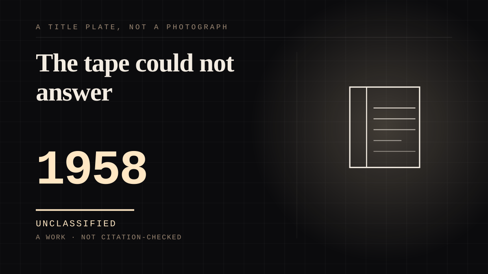

A work · 1958 · Live
The tape could not answer
A man on his sixty-ninth birthday plays a recording he made at thirty-nine, and has the conversation the tape cannot have back.

The far end is the near side. Everywhere else on this site the other end of the tie is somebody else, and the entire argument of the site is that the other person cannot answer. This inverts it. Krapp records a tape reviewing the year gone on every birthday of his life; on his sixty-ninth he puts on the one he made at thirty-nine, and talks to it. The Guardian's reading is that although it is performed by a single actor, "it is not quite a monologue. It becomes a kind of dialogue between the 69-year-old Krapp and his recorded 39-year-old self." A solo monologue, staged, that is a conversation with somebody who is guaranteed never to speak again - performed to an audience watching a man fail to get a reply from a voice that is his own.
And the tape is not only silent. It is damaged.
This is the detail that earns the entry. An Opera Quarterly article records a mechanical error present in all the Faber & Faber editions and in the so-called avant-texte, appearing in a typescript from shortly before publication in 1958: four words are missing from the tape. The article calls them "a sonic or performative punctum pricking the one who realizes it". So the single artefact that carries his younger self back into the room is itself incomplete, in a way no reprint fixes. The past self is not silent; it is truncated - and the damage is material, printed into every copy, rather than a figure of speech about loss.
The tape's own contents are a record of being refused.
The one his ledger marks "Farewell to love" recalls a tryst on a river, and the Guardian's 2024 review calls it "a jolt to hear the line, spoken calmly: 'I said again I thought it was hopeless and no good going on and she agreed, without opening her eyes.'" Note the shape: the other party in that memory is on the recording too, and she is described rather than heard. The only voice actually audible is a man reproducing the moment he asked for something and was refused. He is scathing about his thirty-nine-year-old self throughout - mocking his artistic ambition - and the review has him "cradl[e] the tape recorder in a gesture of engulfing loneliness". Then he loads a fresh reel and records the year. The ritual continues, which is what makes it a bond rather than an episode.
Beckett wrote it because he heard somebody hear himself.
The play was written for the Irish actor Patrick Magee, after Beckett heard him read Beckett's own From an Abandoned Work (1954-55) and extracts from Molloy (1955) on the radio - a man hearing a recording of his own voice. So the occasion of a play about listening to yourself was a real instance of it. And the structure keeps being manufactured the way the play describes it: Arts Over Borders asked Samuel West and Richard Dormer each to record the taped Krapp at thirty-nine, so the two-age split is produced by casting two people rather than by time travel, and successive productions have reused the same machine.
One archival fact, and it is the sad one.
There is no recording of the 1958 premiere with Patrick Magee in the title role under Donald McWhinnie's direction. So the first audience's encounter with this tie has no trace, while a play whose entire subject is a destructible recording has outlived every document about its own first night. This is an archive register entry hiding inside a bond entry - the same double reading as dear-kitty's "as long as this still exists, I cannot be sad", and it is why the tape rather than the man is the thing this site should remember about the play.
Why the medium matters here.
stage was added to the medium list and had nothing behind it. The honest way to fill that is not to move an existing entry into a new bucket, which would be a tidier chart and a false classification, but to write the entry the shelf was opened for. Krapp is a play, the play is the subject, and a solo monologue turning on a machine that cannot answer is about as close as this site's central structure gets to being staged.
Where it sits
1950 1950-1999 · 1958 1999
Provenance · 4 source record(s)
- retrievableThe basic record and the sequence. A 1958 one-act play in English by Samuel Beckett, premiered 28 October 1958 at the Royal Court Theatre, London. The curtain rises on a "late evening in the future"; Krapp is an old man in his den with a tape recorder and tins of reels, and "reads aloud from a ledger to find a certain tape, but the words alone are not jogging his memory"; "Krapp lets it play out and then rewinds the tape to hear the complete episode"; "Afterwards, Krapp loads a fresh tape and begins to recount his year. He is scathing when it comes to his assessment of his thirty-nine-year-old self." Also that his problem with constipation has been ongoing since at least that time, and the thirty-nine-year-old's estimate that the tape he was listening to was made ten or twelve years before that. Read in full for the plot order rather than summarised from memory.Wikipedia, "Krapp's Last Tape" ↗
- retrievableThe dialogue claim, the birthday ritual, and the occasion of the play. "Although performed by a single actor, Krapp's Last Tape is not quite a monologue. It becomes a kind of dialogue between the 69-year-old Krapp and his recorded 39-year-old self, who in turn reflects on how he behaved in his late 20s." Also that Krapp "spools through reels of memoir recorded each year on his birthday"; that Beckett wrote the play for Patrick Magee after hearing him read Beckett's own From an Abandoned Work (1954-55) and extracts from Molloy (1955) on the radio; that Arts Over Borders asked Samuel West and Richard Dormer to each record the part of the taped Krapp when they were 39; that a production reused "the same machine used by Michael Gambon and John Hurt"; and the line "Perhaps my best years are gone."Chris Wiegand, "Holy Krapp! Gary Oldman and Stephen Rea unspool Beckett's masterpiece about memory", The Guardian, 1 May 2025 ↗
- retrievableThe contents of the tape and how it is heard. The recording Krapp's ledger notes as "Farewell to love", and the review's account that "Its recollection of a lovers' tryst on a river is so tenderly evoked that it is a jolt to hear the line, spoken calmly: 'I said again I thought it was hopeless and no good going on and she agreed, without opening her eyes.'" Also that Krapp "mocks his younger self's artistic ambition" and is "bemused by the confident delivery of the 39-year-old on tape"; that Rea "cradles the tape recorder in a gesture of engulfing loneliness" at this point; and that Beckett wrote much of his work in French, which the production marks in Krapp's delivery.Review of Stephen Rea in Krapp's Last Tape, directed by Vicky Featherstone, Project Arts Centre Dublin, The Guardian, 19 January 2024 ↗
- retrievableThe corrupted tape, which is the entry's central detail and could not have been found in a review. "Sitting at his desk at night, the old Krapp listens to his own voice recorded on a reel-to-reel tape thirty years earlier." The mechanical error is "present not only in all the Faber & Faber editions, but also in the so-called avant-texte", and "appears and then" persists from "one of Beckett's last typescripts dating from shortly before the work's publication in 1958"; "the four missing words when listening to Krapp's tape can be considered as a sonic or performative punctum pricking the one who realizes it". Also Steven Connor, quoted: "for Krapp to listen to the tape of himself as a man of thirty-nine is to reveal clearly his ironic non-coincidence with himself." And the archival absence: "As far as I have been able to ascertain, there is no recording of the premiere of Krapp's Last Tape with Patrick Magee in the title role under the direction of Donald McWhinnie (London, Royal Court Theatre, October 28, 1958)." Read via search index rather than fetched in full, so the article's author and length are not recorded and no DOI identity was checked."Graphanalysis, Technological Reproduction, and the Acoustical Unconscious: Reflections on an Error in Beckett's Krapp's Last Tape", The Opera Quarterly (Oxford Academic) ↗
Not yet stood behind. The entry is real. A person has not read the citation and confirmed it, so treat the date as approximate until they do.
COMPANION The assistant you talk to
Connected · 2 out, 0 in
It sits in
The full timeline → · The database → · See it in the atlas →